Dear friends,
Mark and I hope that this letter finds you well and enjoying the winter/holiday season. I'm trying a new format this year, putting this letter on the web so that I can include a few pictures along the way.
This year included a major event in my immediate family: my brother Tom's wedding in May. Tom and his wife Dawn, my other brother Jim and his wife Dixie, and Mark and I got to spend some time hiking and reconnecting. Another Hermiller family landmark occurred this fall, when the house my brothers and I grew up in was sold.
| 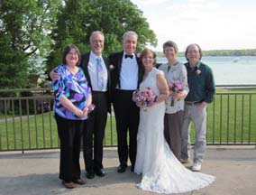 | 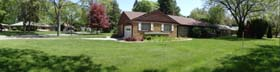 |
This August we had three PhD students graduate; two coadvised by me and Mark, and the third a student of Mark's. This has made a big change for us, but we still have three doctoral students, with a fourth likely to join us this spring, so we're still keeping busy.
| 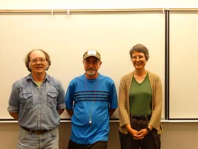 | 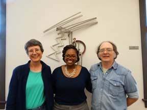 | 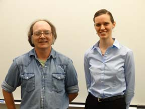 |
Mark and I combined work travel with sightseeing several times during the year, including a month in Europe. We spent a week at the University of Zaragoza (the castle is the nearby Castell de Loarre) and a week at a conference in Porto (and visited the nearby Citana de Briteiros iron age hill fort/village).
| 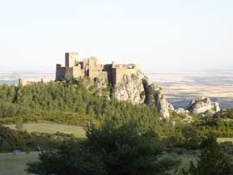 | 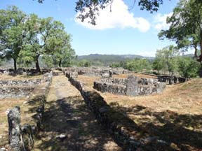 |
On the third week we took a vacation in northwest spain, hiking along the St. James Way, seeing the hydraulic engineering legacy of a Roman gold mine, and hiking in Picos de Europa national park. The last week was back to work, this time at the universities of Newcastle and Leicester.
| 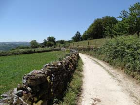 | 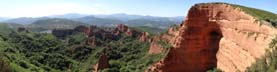 | 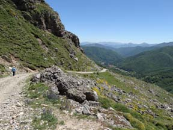 |
Closer to home, I thought I'd include pictures from 2015 of some of our favorite annual events here in Nebraska: The snow goose and sandhill crane migrations through Nebraska, fall color (Arbor Lodge state park), and a hawk visiting the peach tree in our back yard:
| 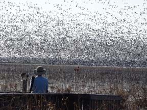 | 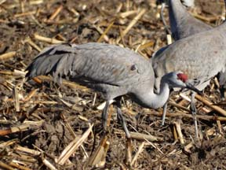 | |
| 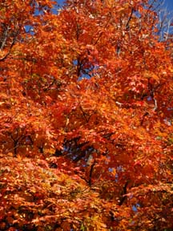 | 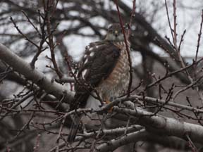 |
Happy holidays and new year to all of you! Mark and I hope you've had a good year in 2015, wish you the very best for 2016.
Susan